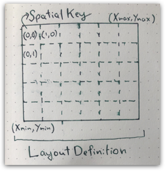
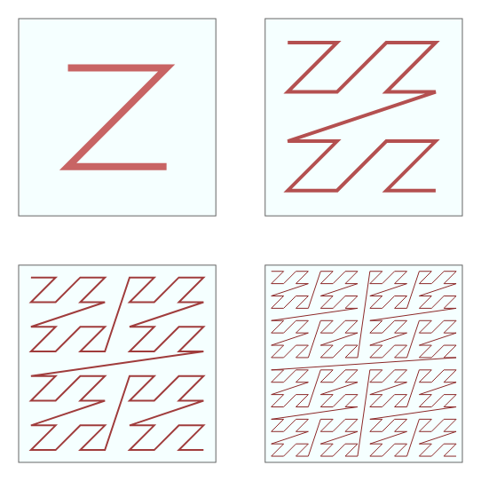

Geotrellis openEO processing
This page describes some implementation details about the openEO processing based on Geotrellis.
Overview
The core of the implementation is written in Scala, and can be found in the openeo-geotrellis-extensions repository.
The following image shows the mapping between key openEO concepts, and classes in the implementation:

General processing strategy
By design, the Geotrellis implementation relies on distributed processing via the Apache Spark library. Spark gives us a framework to describe and execute distributed processing workflows that transform arbitrary collections of objects. In Spark, these are called resilient distributed datasets, or RDDs.
Geotrellis is a framework that helps with representing georeferenced raster and vector data and also supports Spark. Hence, the objects in our Spark collections (RDD), are key-value pairs where the key contains a timestamp and a row and column in a spatial grid. The value is multiband raster tile. Such a tile contains chunks of a fixed size, by default 256x256 pixels, for each band in the openEO data cube.
So let’s take the example of an ‘apply’ process in openEO, with the process set to ‘abs’. In this case, Spark can simply apply the absolute value process to each 2D tile in parallel. If a chain of processes is applied, Spark and Geotrellis functionality is used to make sure that this all happens as efficiently as possible.
An important feature of Spark is that intermediate results are kept in memory whenever possible and only spilled to disk when needed. Writing to disk is entirely hidden for the actual processing workflow. This is quite different from more traditional batch processing workflows that commonly write a lot of intermediate results to disk.
Other aspects covered by the combination of Spark and Geotrellis are complex operations such as merging data cubes, resampling or applying functions over the complete timeseries for a given pixel. In these cases, it is often needed to reorganize the the dataset in various ways. The Geotrellis openEO implementation tries to optimize all these cases.
For UDF’s, where user-provided Python code is executed, we similarly reorganize the dataset, depending on what spatiotemporal subset of the datacube can be processed in parallel. Then the data is converted into a Python XArray object which is passed on to the user code for transformation.
Data Cubes
The main openEO concept implemented by this library is the Raster data cube, which is a multi-dimensional array of raster data.
This library does not support arbitrary multidimensional cubes, but rather focuses on the type of cubes that are most commonly encountered in earth observation. The most complex type that we can represent is the 4-dimensional space-time-bands cube.
This cube is mapped to a Geotrellis MultibandTileLayerRDD
For cubes with a temporal dimension, a SpacetimeKey is used, while spatial cubes use the SpatialKey.
Geotrellis documents this class and its associated metadata here.
The key class describing the spatial layout of a cube is the LayoutDefinition, which combines an arbitrary spatial extent with a regular tile grid (TileLayout). This also defines the pixel size, which is fixed for the entire cube.

To be able to understand how these cubes work and behave, or how to correctly manipulate them, knowledge of the Spark RDD concept is essential. These are distributed datasets that (in production) live on multiple machines in a cluster, allowing openEO to effectively scale out computations.
Data cube loading: load_collection & load_stac
Loading large EO datasets into a Spark RDD is complex, mainly due to the variety in data formats, but also because IO is often a performance & stability bottleneck. Depending on the characteristics of the underlying storage system, the optimal loading strategy may also differ, which is why we support multiple code paths.
The main class for loading data from POSIX or Object Storage type of systems is the FileLayerProvider.
This load_collection implementation supports a number of features:
- Resampling at load time, improving both performance and correctness.
- Loading of GDAL supported formats
- Loading of Geotiff using a native implementation
- Applying masks at load time, reducing the amount of data to read
- Applying polygonal filtering at load time
Data cube organization: partitioners
As mentioned, Spark will distribute data cubes over a cluster, into groups of data called partitions. A partition needs to fit into memory for processing, so the size matters, and Spark is not able to know the optimal partitioning for any given problem.
Depending on procesess that are used, the optimal partitioning scheme can also change: for time series analysis, it would be optimal to group data for the same location with multiple observations in the same group. For other processes, like resample_spatial, it may be needed to have information from neighbouring tiles, so a grouping per observation would be more optimal. As a rule of thumb it is up to the process to check the partitioner, and change it if needed.
Whenever a partitioner is changed, the data will be shuffled, which is a costly operation. This is why the code often tries to cleverly avoid this where possible.
Assigning keys to partitions happens based on an indexing scheme. Usually, it is recommended to consider the spatiotemporal nature of the data to select the optimal scheme. Geotrellis explains a few potential schemes here.
The default scheme in openEO is the Z-curve. The 2D variant is shown below, for cubes with a time dimension, the 3D variant is used.

Sparse partitioners
Data cubes can be sparse because openEO supports operations on polygons, that are not necessarily spatially adjacent. Examples include the use of aggregate_spatial on a vector cube or the filter_spatial process on a vector cube.
When this case occurs, regular Geotrellis spatial partitioners tend to create too many partitions, because they consider the full bounding box instead of the more detailed geometry locations. The same can occur for data which is irregular in the temporal dimension.
The effect of having too many partitions, is huge numbers of Spark tasks that do not do anything, but still consume resources as they are nevertheless scheduled. This becomes especially noticeable when the actual work that needs to be done is small.
Sparse partitioners avoid this problem by determining all of the SpacetimeKeys up front. We also store the list of keys in the partitioner itself, allowing certain operations to be implemented more efficiently.
openEO processes
This library implements a large part of the openEO process specification, mainly by using Geotrellis functionality.
Depending on the type of process, the implementations can be found in 2 main locations: OpenEOProcesses and OpenEOProcessScriptBuilder.
OpenEOProcesses implements the Scala part of predefined processes that operate on full data cubes. This Scala code is usually invoked by a Python counterpart in GeopysparkDataCube. Some of this Scala code may be used by multiple openEO process implementations. For instance, openEO reduce_dimension and apply_dimension can in some cases use the same code.
OpenEOProcessScriptBuilder supports openEO processes that operate on arrays of numbers, which are often encountered in openEO child processes, as explained here. This part of the work is not distributed on Spark, so operates on chunks of data that fit in memory. It does use Geotrellis which generally has quite well performing implementations for most basic processes.
Specific properties of the Geotrellis implementation
Only up to 4D cubes supported
A Geotrellis cube has fixed dimensions, in this order: time, y, x, and bands. This does not prevent us from advertising certain operations on dimensions at the metadata level, but does imply some limitations. In practice, this limitation has little impact on most real-world use cases.
The bands dimension is a single array
Bands are represented by a single array, and thus needs to fit in memory. Some applications require more than 100 bands, and thus either need to increase memory, or decrease the chunk size.
Tunables
The Geotrellis implementation has a number of tunables that can be used to configure a specific backend for an environment, or that can be set per batch job. Most of them can be found in openeogeotrellis.config.config.GpsBackendConfig.
tile_sizeis the size in pixels of a single tile, as returned byload_collection. Large tiles benefit operations on spatial neighborhoods, but may require memory or cause jobs to fail. Small tiles may create more overhead from parallellization or task scheduling.executor_threads_jvmis the number of worker threads given to the Java/Scala part of the processing. This only helps if operations effectively use parallel processing. In specific combinations it can cause crashes due to threading issues.- GDAL has various caching related settings that may impact IO performance, but also increase memory usage throughout the lifetime of the job.
Runtime properties of a typical cloud setup
The behaviour and configuration of an openEO backend heavily depends on the performance characteristics of the environment in which it is deployed.
A very common one is a ‘cloud’ environment, which we define as having the following characteristics:
- A cpu to memory ratio of about 4GB per cpu, where requesting more memory is possible but will increase costs, while reducing memory is also possible, but may not necessarily free up the cpu, even though overcommitting cpu is possible.
- Object storage access for data, with relatively high latency per request, but good throughput. Supports many requests in parallel.